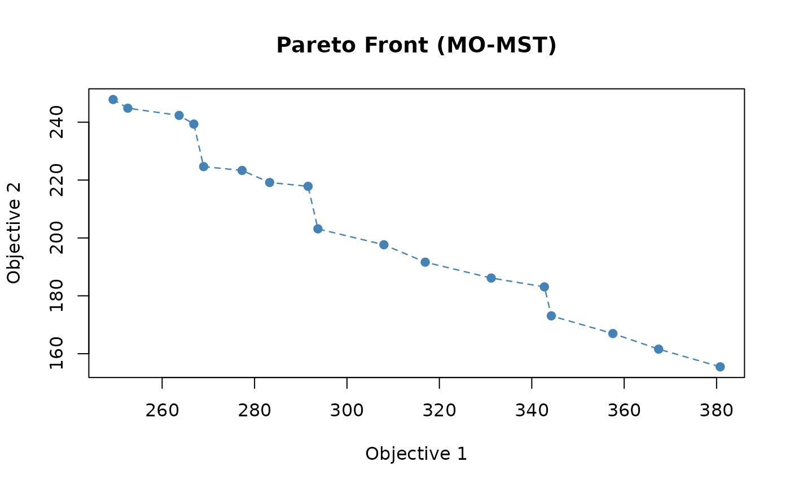
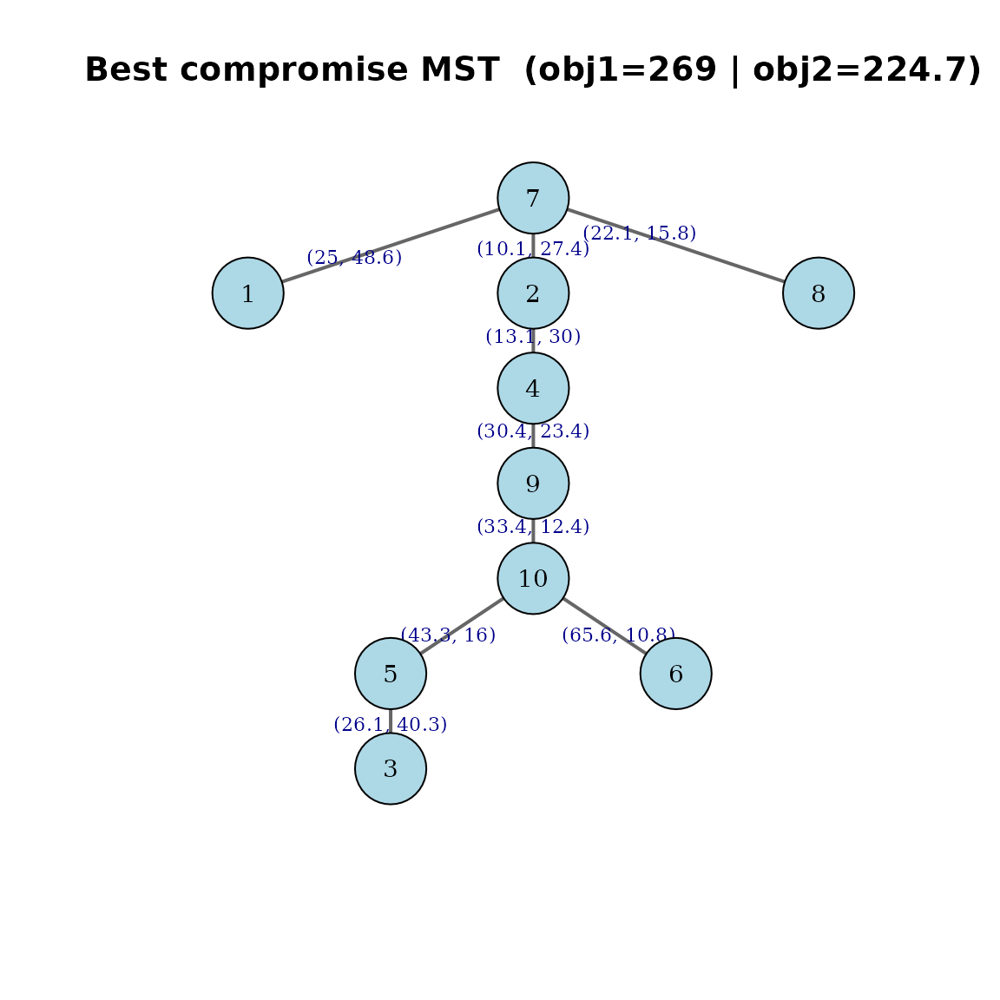
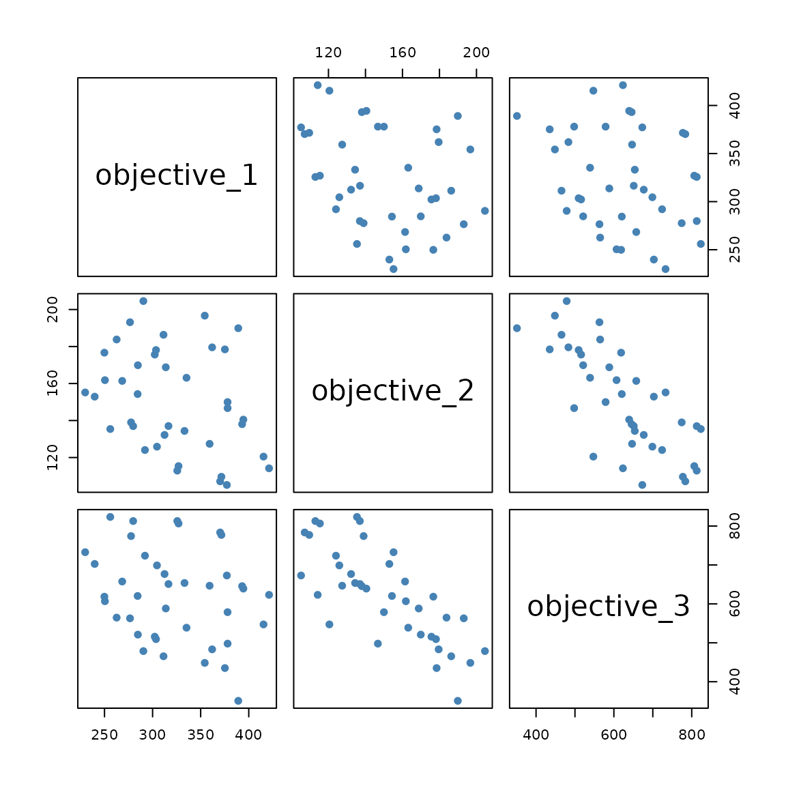

Getting Started with momst
Jorge A. Parraga-Alava
2026-06-02
Source:vignettes/getting-started.Rmd
getting-started.RmdOverview
The momst package solves the Multi-Objective Minimum Spanning Tree (MO-MST) problem on complete weighted graphs. Given a graph where every edge carries two or three independent costs (for example: distance, time, and risk), the goal is to obtain the Pareto front of spanning trees that no other tree dominates in all objectives simultaneously.
The solver is built around the NSGA-II algorithm
(Non-dominated Sorting Genetic Algorithm II) and uses Prufer
sequences as the chromosome representation. By Cayley’s
theorem, every integer vector of length n - 2 with values
in {1, ..., n} decodes to a unique spanning tree of
n nodes, so the representation is closed under random
sampling, crossover, and mutation. This avoids the need for any repair
operator.
The package exposes four solver variants that differ in the local search operator applied after each generation:
| Variant | Local search |
|---|---|
"base" |
None (pure NSGA-II) |
"PR" |
Path Relinking |
"PLS" |
Pareto Local Search |
"TS" |
Tabu Search |
This vignette shows the minimal workflow:
- Generate a random instance.
- Run
run_momst()with a chosen variant. - Inspect the population, the per-iteration Pareto fronts, and the global Pareto front.
- Visualise the global Pareto front and the best-compromise spanning tree.
A companion vignette
(vignette("momst-variants", package = "momst")) compares
the four variants side by side.
Reference
This package is the reference implementation of the method described in:
Parraga-Alava, J., Inostroza-Ponta, M., and Dorn, M. (2017). “Using local search strategies to improve the performance of NSGA-II for the Multi-Criteria Minimum Spanning Tree problem”. In 2017 IEEE Congress on Evolutionary Computation (CEC), pages 1818 to 1825. IEEE. doi:10.1109/CEC.2017.7969432
To get the citation entry from within R:
citation("momst")Installation
You can install the development version of the package directly from GitHub:
# install.packages("remotes")
remotes::install_github("jorgeklz/momst", build_vignettes = TRUE)A first end-to-end example
Step 1. Generate a random bi-objective instance
generate_instance() returns an edge list of a complete
graph with random uniform weights for every objective. The
seed argument makes the instance fully reproducible without
polluting the global random number generator.
# Number of nodes and number of objectives
n_nodes <- 10
n_obj <- 2
# Generate a complete graph with two independent weights per edge
inst <- generate_instance(
n = n_nodes,
num_obj = n_obj,
range_a = c(10, 100), # weight range for objective 1
range_b = c(10, 50), # weight range for objective 2
seed = 12345
)
# The instance has n*(n-1)/2 edges
nrow(inst)
#> [1] 45
# First six edges of the complete graph
head(inst)
#> from to weight_1 weight_2
#> 1 1 2 74.88135 22.84899
#> 2 1 3 88.81959 12.40781
#> 3 1 4 78.48841 11.73826
#> 4 1 5 89.75121 12.20215
#> 5 1 6 51.08329 35.02171
#> 6 1 7 24.97346 48.57881For performance, the package converts the edge list into one
n x n lookup matrix per objective so that the cost of any
edge (i, j) can be retrieved in constant time:
lk <- build_weight_lookup(inst, n_nodes, n_obj)
# Each element is a symmetric weight matrix
str(lk, max.level = 1)
#> List of 2
#> $ : num [1:10, 1:10] 0 74.9 88.8 78.5 89.8 ...
#> $ : num [1:10, 1:10] 0 22.8 12.4 11.7 12.2 ...
# Weight of edge (1, 2) in objective 1
lk[[1]][1, 2]
#> [1] 74.88135Step 2. Run the NSGA-II solver (base variant)
run_momst() is the main entry point. It performs:
-
iterationsindependent runs of NSGA-II (useful to average results). - Inside each run, up to
max_generationsevolutionary cycles. - After every cycle, a local search operator is applied to the current
non-dominated set (none for
"base"). - A global Pareto front is assembled from the final population of each independent run.
For a first contact we use the simplest variant, "base".
A small instance and short runs are enough to illustrate the
workflow.
res_base <- run_momst(
instance = inst,
n = n_nodes,
num_obj = n_obj,
variant = "base", # pure NSGA-II
iterations = 3, # three independent runs
pop_size = 30, # must be even
tour_size = 2, # binary tournament selection
cross_rate = 0.80, # crossover probability
mut_rate = 0.10, # per-individual mutation probability
max_generations = 40, # generations per run
convergence_window = 8, # early stopping window
verbose = FALSE,
seed = 2026
)The function returns a list with everything needed to analyse the results:
names(res_base)
#> [1] "instance" "lookup" "iterations" "pareto_per_iter"
#> [5] "global_pareto" "elapsed"-
instance: the edge list used. -
lookup: the per-objective weight matrices. -
iterations: the final populations of every independent run. -
pareto_per_iter: the Pareto front of every independent run. -
global_pareto: the non-dominated union of all those fronts. -
elapsed: wall-clock time in seconds.
Step 3. Inspect the global Pareto front
Each row of global_pareto is a candidate spanning tree.
The first n - 2 columns are the Prufer sequence (the
chromosome), and the columns objective_1,
objective_2 (and optionally objective_3)
report the total cost of the tree in each
objective.
# Number of non-dominated trees
nrow(res_base$global_pareto)
#> [1] 17
# Show the chromosomes and their objective values
res_base$global_pareto
#> V1 V2 V3 V4 V5 V6 V7 V8 objective_1 objective_2 rankingIndex density
#> X.16 7 5 2 10 7 2 4 9 249.3887 247.8416 1 Inf
#> X 3 7 10 10 7 2 4 10 380.7875 155.4644 1 Inf
#> X.251 7 7 10 10 7 2 4 9 293.7133 203.1376 1 0.19957716
#> X.151 10 7 10 10 7 2 4 9 344.2333 173.0798 1 0.16530635
#> X.131 8 7 10 10 7 2 4 9 307.9984 197.6509 1 0.16149706
#> X.12 7 7 10 10 7 2 4 10 316.9414 191.6354 1 0.16149706
#> X.21 3 7 10 10 7 2 4 9 357.5594 166.9666 1 0.16149706
#> X.24 10 7 10 10 7 2 4 10 367.4614 161.5776 1 0.16149706
#> X.17 8 7 8 10 7 2 4 9 291.5831 217.8454 1 0.14951032
#> X.19 7 5 10 10 7 2 4 9 268.9845 224.6546 1 0.14951032
#> X.5 8 7 10 10 7 2 4 10 331.2265 186.1487 1 0.14935738
#> X.29 8 5 8 10 7 2 4 9 266.8543 239.3624 1 0.14364817
#> X.301 10 5 10 10 7 2 4 10 342.7326 183.0947 1 0.13737064
#> X.261 8 5 2 10 7 2 4 9 263.6738 242.3549 1 0.08808047
#> X.4 7 5 8 10 7 2 4 9 252.5692 244.8491 1 0.08808047
#> X.361 7 7 8 10 7 2 4 9 277.2980 223.3321 1 0.08808047
#> X.31 8 5 10 10 7 2 4 9 283.2696 219.1679 1 0.08808047We can sort the front by objective 1 to see the typical trade-off between objectives:
front <- res_base$global_pareto[order(res_base$global_pareto$objective_1), ]
front[, c("objective_1", "objective_2")]
#> objective_1 objective_2
#> X.16 249.3887 247.8416
#> X.4 252.5692 244.8491
#> X.261 263.6738 242.3549
#> X.29 266.8543 239.3624
#> X.19 268.9845 224.6546
#> X.361 277.2980 223.3321
#> X.31 283.2696 219.1679
#> X.17 291.5831 217.8454
#> X.251 293.7133 203.1376
#> X.131 307.9984 197.6509
#> X.12 316.9414 191.6354
#> X.5 331.2265 186.1487
#> X.301 342.7326 183.0947
#> X.151 344.2333 173.0798
#> X.21 357.5594 166.9666
#> X.24 367.4614 161.5776
#> X 380.7875 155.4644The “extreme” solutions of the front are the trees that minimise each objective in isolation:
Step 4. Plot the Pareto front
plot_pareto_front() produces a base-graphics scatter of
the non-dominated set. The dashed line connects consecutive points after
sorting by the first objective, which makes the trade-off easy to
read.
plot_pareto_front(res_base)
Global Pareto front returned by the base variant.
Step 5. Decode and plot the best-compromise tree
The “best-compromise” tree is the one that minimises the sum of all
objectives. The helper plot_best_tree() decodes its Prufer
chromosome, turns it into an igraph object, and labels each
edge with its cost in every objective.
The igraph package is only needed for this plot; the
rest of the package does not depend on it.
if (requireNamespace("igraph", quietly = TRUE)) {
plot_best_tree(res_base, n = n_nodes)
} else {
message("Install 'igraph' to plot the spanning tree.")
}
Best-compromise spanning tree of the base variant.
Working with three objectives
The same workflow extends seamlessly to three-objective problems.
Just set num_obj = 3 and supply a third weight range
range_c. The Pareto front then lives in a three-dimensional
objective space.
res_3obj <- run_momst(
n = 8,
num_obj = 3,
variant = "base",
iterations = 2,
pop_size = 30,
max_generations = 25,
range_a = c(10, 100),
range_b = c(10, 50),
range_c = c(30, 200),
verbose = FALSE,
seed = 7
)
# Three-objective non-dominated set
head(res_3obj$global_pareto[, c("objective_1", "objective_2", "objective_3")])
#> objective_1 objective_2 objective_3
#> X.10 377.2130 105.1852 672.9824
#> X.221 421.0996 114.1803 623.2404
#> X.101 229.8941 155.1778 732.7992
#> X.131 389.0804 189.9002 350.9168
#> X.3 290.4036 204.5720 478.7301
#> X.5 256.0040 135.4129 823.3894A simple way to inspect the three-objective front without extra dependencies is a pairs plot:
front3 <- res_3obj$global_pareto[, c("objective_1", "objective_2", "objective_3")]
pairs(front3, pch = 19, col = "steelblue")
Pairwise projections of the three-objective Pareto front.
Reproducibility
Every stochastic step inside run_momst() is controlled
by the seed argument. Two calls with the same arguments and
the same seed return identical results:
a <- run_momst(n = 8, num_obj = 2, variant = "base",
iterations = 1, pop_size = 20, max_generations = 15,
verbose = FALSE, seed = 99)
b <- run_momst(n = 8, num_obj = 2, variant = "base",
iterations = 1, pop_size = 20, max_generations = 15,
verbose = FALSE, seed = 99)
identical(a$global_pareto, b$global_pareto)
#> [1] TRUEWhere to go next
-
vignette("momst-variants", package = "momst")runs the four solver variants on the same instance and compares their Pareto fronts both numerically and visually. -
?run_momstdocuments every argument of the main solver. -
?plot_pareto_frontand?plot_best_treedocument the plotting helpers. -
?apply_local_searchdocuments the dispatcher used internally to call the local search operator selected by thevariantargument.